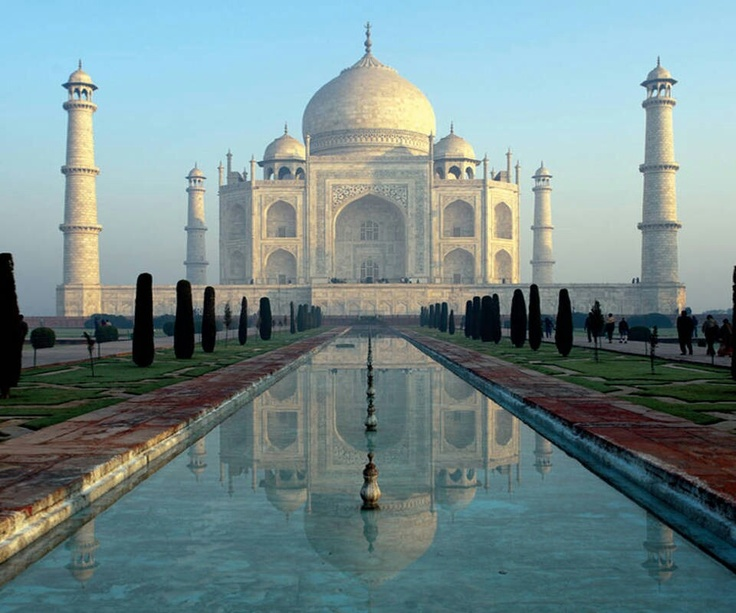

The city of the Taj Mahal — a timeless symbol of love and Mughal grandeur.

Agra is a city on the banks of the Yamuna river in the Indian state of Uttar Pradesh. It is best known as home to the Taj Mahal, one of the Seven Wonders of the World. Built by Mughal Emperor Shah Jahan in memory of his wife Mumtaz Mahal, it stands as a symbol of eternal love. Agra also houses other UNESCO World Heritage Sites like Agra Fort and Fatehpur Sikri. The city was the capital of the Mughal Empire and remains one of India's most visited tourist destinations.